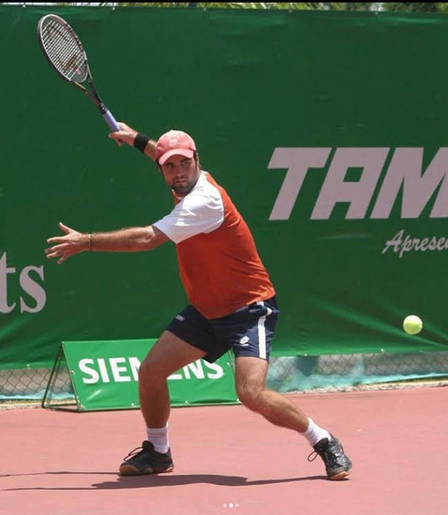
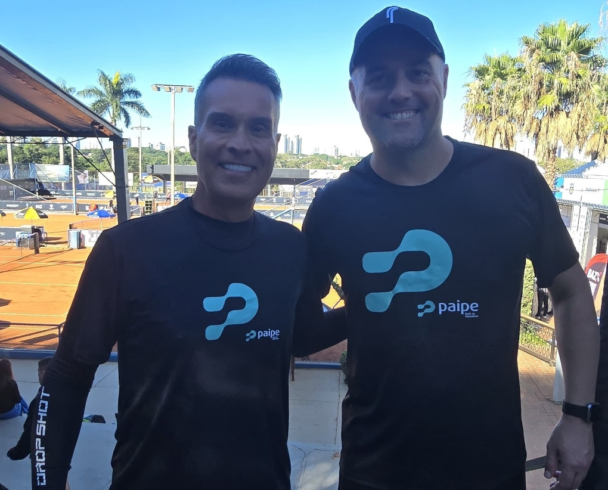
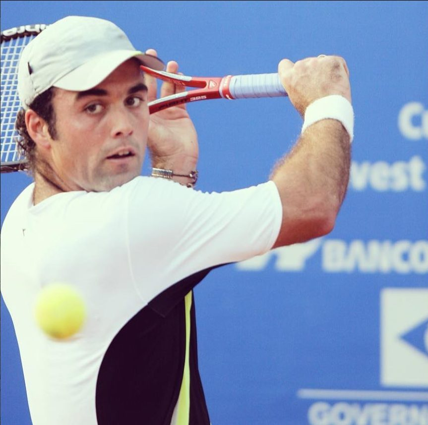

Do circuito à quadra do dia a dia
Natural de Novo Hamburgo, no Rio Grande do Sul, Lucas Feltes Engel construiu sua trajetória no tênis profissional disputando torneios do ATP Challenger e do ITF Futures — a estrada de quem vive a competição de verdade, viagem após viagem, jogo após jogo.
Anos de circuito profissional viraram método. A leitura de jogo, a técnica apurada e a mentalidade de quem competiu no alto rendimento são hoje colocadas a serviço de cada aluno — do primeiro contato com a raquete à preparação para torneios.
Mais do que golpes: entender o ponto, decidir sob pressão e evoluir com consistência. É esse tênis que Lucas ensina.

Marcas no profissional
Uma carreira construída entre Challengers e Futures, com resultados diante de nomes de peso do tênis brasileiro.
Formado na estrada do circuito profissional, Lucas transforma anos de competição de alto nível em método de treino — técnica, leitura de jogo e mentalidade competitiva ao lado de cada aluno.
Quem já saiu derrotado da quadra
Adversários batidos ao longo da carreira profissional — nomes que passaram pelo top 10 mundial, pela liderança do ranking de duplas e pela seleção brasileira de Copa Davis.
Enfrentar esse nível de adversário ensina o que nenhum manual ensina: como o ponto é construído sob pressão. É essa leitura que Lucas leva para a quadra com cada aluno.
A dupla mais velha da história no circuito ATP
Em 13 de maio de 2026, ao lado de Paulo Camargo, Lucas entrou em quadra por um torneio válido pelo ranking mundial da ATP e escreveu uma página inédita do tênis brasileiro.

Paulo Camargo e Lucas Feltes Engel no torneio de Maringá (PR), em 13 de maio de 2026.
Mais do que um recorde, uma história de superação. Paulo voltou ao esporte profissional depois de um longo período afastado das quadras. Lucas enfrentou e venceu uma batalha de anos contra o câncer antes de conseguir retornar ao circuito. Os dois entraram em quadra juntos — e saíram para a história.
Como são as aulas
Treino individual e personalizado, adaptado ao seu nível e ao seu objetivo — da iniciação à competição.

Aula individual
Treino personalizado e focado em você, no seu ritmo — do primeiro contato com a raquete ao alto rendimento.
Técnica de golpes
Correção e refinamento de saque, forehand, backhand e voleio a partir de fundamentos do profissional.
Tática e leitura de jogo
Montar o ponto, ler o adversário e decidir sob pressão — o que separa treinar de competir.
Do saque à competição — aulas para iniciantes, intermediários e atletas em busca de resultado.
Pronto para evoluir seu tênis?
Aulas individuais em Novo Hamburgo · RS. Combine horário, nível e objetivo direto pelo WhatsApp — a primeira mensagem já garante seu primeiro treino.